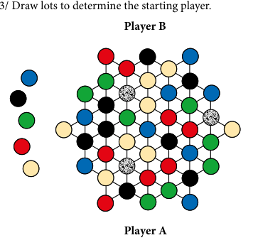
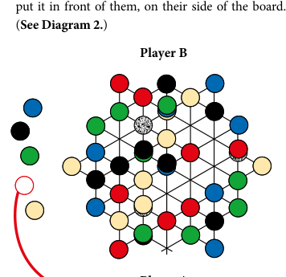
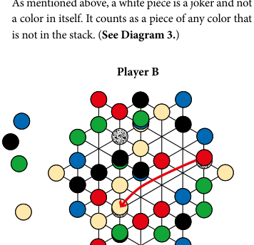
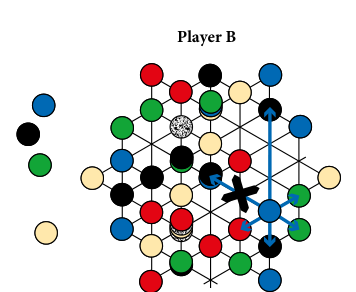
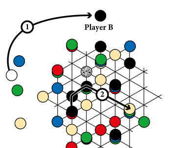

LYNGK
全在于连结……
终章：星盘计划（GIPF project）的第七款游戏。双人游戏。
尽管星盘计划（GIPF project）最初只打算包含6款游戏，但作为系列第七作的 LYNGK，是整个计划的集大成之作。如果说《星盘（GIPF）》是该计划的基石，那么《LYNGK》就是统领全局的华盖。它通过融合系列中每款游戏的标志性元素和机制，将这6款游戏完美地串联在一起。
A 游戏配件 (CONTENTS)
- 1 块游戏版图
- 3 枚白色杂色棋子（代表 GIPF）
- 9 枚象牙色棋子（代表 TZAAR）
- 9 枚蓝色棋子（代表 ZÈRTZ）
- 9 枚红色棋子（代表 DVONN）
- 9 枚绿色棋子（代表 PÜNCT）
- 9 枚黑色棋子（代表 YINSH）
- 1 个收纳袋
- 1 份说明书
B 游戏目标 (AIM OF THE GAME)
LYNGK 包含6种不同颜色的棋子，每种颜色代表星盘计划中的一款游戏。实际上，游戏中只有5种主动颜色，因为第6种颜色（白色杂色，以下简称“白色”）本身不属于任何阵营；它可以作为其他5种颜色中的任意一种来使用。在游戏开始时，其他5种颜色的棋子都是中立的，属于双方玩家。
在游戏过程中，每位玩家必须认领2种颜色——这意味着从那一刻起，对手将不能再移动这些颜色的棋子。游戏的目标是堆叠出由5种不同颜色的5枚棋子组成的棋堆。在游戏结束时，拥有最多5层棋堆的玩家将获得胜利。
C 游戏准备 (PREPARATION)
- 将每种颜色的8枚棋子和3枚白色棋子随机放置在版图上，确保每个点（即线条的交叉处）都被占满。
- 将剩余的棋子（1枚象牙色、1枚蓝色、1枚红色、1枚黑色和1枚绿色）排列在版图旁。（见图1）
- 抽签决定起始玩家。

图1：随机的起始布局，版图旁放置着5枚棋子，代表游戏开始时的5种中立颜色。由于双方都还不知道自己将认领哪些颜色，因此随机的布局不会对任何一方产生倾斜优势。

图2：玩家A认领了红色。他必须在移动之前进行认领，因为一旦他在版图上移动了棋子或棋堆，回合就将交还给对手；此时对手也可以在移动之前认领颜色。
D 百搭棋子、中立棋子与认领棋子
- 这3枚白色棋子必须被视作“百搭（Jokers）”，即它们可以代表5种主动颜色中的任意一种。这些百搭棋子是被动的，不能主动用来进行移动；它们只能作为棋堆的一部分被移动。
- 游戏开始时，版图上的所有棋子都是中立的。它们不属于任何一方，这意味着除了被动的百搭棋子外，双方都可以移动它们。
- 在游戏过程中，每位玩家可以认领2种颜色。一旦某颜色的棋子被玩家认领，它们便不再是中立的。从那一刻起，只有认领该颜色的玩家才能移动这些棋子。
注意：版图旁的5枚棋子仅用于认领颜色。它们不能被放入游戏中。
- 玩家可以在游戏的任何阶段认领颜色，但必须在自己回合的移动之前进行。要认领一种颜色，玩家必须拿走版图旁所需颜色的棋子，并将其放在自己面前的这一侧。（见图2）
- 玩家一次只能认领一种颜色。因此，不允许在同一回合内同时认领2种颜色。
- 当双方玩家都认领了各自的2种颜色后，最后剩下的（第5种）颜色保持中立。在剩余的游戏中，双方玩家都可以继续使用这种中立颜色的棋子。
E 移动规则 (A MOVE)
- 双方轮流进行回合。在每回合中，玩家必须移动一枚棋子或一个棋堆。玩家可以选择中立颜色或自己认领颜色的任意棋子/棋堆进行移动。
- 移动棋堆时，必须将其作为一个整体移动。棋堆顶部的棋子决定了该棋堆是中立的，还是属于某位玩家。
- 无论是移动中立颜色还是认领颜色的棋子/棋堆，移动的终点必须是一个被占据的位置，即必须落在另一个棋子或棋堆之上。棋子可以移动到相邻的棋子/棋堆上，也可以在直线上越过空交叉点，移动到直线上的第一个棋子/棋堆上。不允许跳过任何棋子或棋堆。
- 游戏中还有一种额外的移动方式，这将在下方“F. LYNGK 规则”中单独说明。
- 一个棋堆最多包含5枚棋子。核心规则是：一个棋堆只能由不同颜色的棋子组成，同种颜色的2枚（或更多）棋子绝不能出现在同一个棋堆中。然而，2枚甚至所有3枚白色棋子可以同时存在于一个棋堆中。如上所述，白色棋子是百搭而非独立颜色，它可以被视为该棋堆中缺失的任何颜色。（见图3）

图3：玩家A组成了一个4层棋堆，包含1枚红色棋子、1枚象牙色棋子和2枚百搭棋子。他可以将这2枚百搭棋子视为棋堆中尚未出现的任何两种颜色的组合：绿/蓝、蓝/黑 或 黑/绿。

图4：红色棋子和棋堆属于玩家A。其他4种颜色仍为中立。当轮到玩家B时，她可以移动任何中立棋子或顶部为中立棋子的棋堆。例如，箭头指示了她可以移动这枚蓝色棋子的路线。该蓝色棋子不能移动到黑色棋堆上，原因有两点：(1) 该棋堆中已经包含了一枚蓝色棋子；(2) 该棋堆的高度高于这枚单枚的中立棋子。
- 一枚单独的中立棋子（即尚未被认领颜色的单枚棋子）只能移动到另一枚单独的棋子上（颜色不限）。换句话说，它可以跳跃到百搭棋子上、其他中立颜色的棋子上，或是被任意玩家认领的颜色棋子上。单独的中立棋子不能移动到棋堆上。（见图4）
- 顶部为中立颜色的棋堆可以移动到任何单独的棋子上，或是高度不高于自己的棋堆上。它不能移动到比自己高的棋堆上。例如，一个顶部为中立颜色的2层棋堆，可以移动到单枚棋子或另一个2层棋堆上，但不能移动到3层棋堆上。
- 一枚认领颜色的单独棋子，或是顶部为认领颜色的棋堆，可以移动到任何其他棋子或棋堆上。（前提是移动后的棋堆高度不超过5层，且所有棋子颜色均不相同）。
- 当玩家完成了一个5层的棋堆，且顶部棋子的颜色属于他们所认领的颜色时，该玩家必须将整个棋堆移出版图，并放置在自己的一侧，确保对手随时可见。在游戏结束时，每一个移出的棋堆价值1分。
- 当玩家完成了一个5层的棋堆，且顶部棋子的颜色为中立颜色时，该棋堆将作为障碍物留在版图上。这个棋堆不属于任何玩家的得分。
- 除非玩家没有任何可行的移动，否则不允许跳过回合（Pass）。
- 如果一名玩家无法再进行移动，另一名玩家必须继续进行游戏，直到他也无法移动为止。如果一名已经跳过回合的玩家由于局势变化再次获得了移动机会，那么该玩家必须进行移动。
F LYNGK 规则 (THE LYNGK-RULE)
在接下来的内容中，单独棋子和棋堆将统称为“棋子”，因为 LYNGK 规则对两者同样适用。
- LYNGK 规则仅在移动已认领颜色的棋子时才可使用。
- 该规则规定，同一种已认领颜色的棋子之间是相互连接的，前提是它们可以通过常规移动触达彼此。玩家可以利用这些认领颜色的棋子作为“中转站”，进行二连跳、甚至三连跳或四连跳。因此，每种认领颜色都可以被视为一张多重移动的专属网络，而对手无法使用这张网络。
- 该规则的应用方式如下：你可以将一枚认领颜色的棋子移动向同色的另一枚棋子，但不能停留在其上方；相反，你需要将到达的棋子作为一个“LYNGK 节点（LYNGK-point）”，这意味着你必须从该节点进行第二次移动。因此，你必须从该节点继续向相邻的棋子，或在直线上可达的棋子移动。如果颜色符合要求，你移动的棋子最终必须停留在该棋子的上方。然而，如果这第二个目标棋子仍然是相同的已认领颜色，你必须从该点进行第三次移动，以此类推，直到移动的棋子落在可以停留的棋子上。（见图5）
- 不允许将百搭棋子作为 LYNGK 节点。
- 在同一回合内，不允许将同一个 LYNGK 节点使用多次。
注意：当使用棋堆作为 LYNGK 节点时，只有顶部棋子的颜色才起作用，棋堆中的其他颜色无关紧要。

图5：玩家A已经领先获得了一个5层棋堆，但玩家B有机会将局势扳平。首先她认领了黑色 (1)，接着她进行了一次三连跳 (2) 并完成了一个5层棋堆。要进行这样的多重移动，所有途经的 LYNGK 节点必须是同一种已认领的颜色。（注意，到目前为止双方都只认领了一种颜色。）
G 游戏结束 (END OF THE GAME)
- 当场上无法进行任何合法的移动时，游戏结束。拥有最多5层（5种不同颜色）棋堆的玩家获得胜利。
- 如果出现平局，版图上拥有最多4层棋堆的玩家获胜。如果依然平局，则计算3层棋堆的数量，依此类推。
- 最终，如果连单枚棋子的数量都完全相等，则游戏以平局告终。
H 变体规则：6层棋堆 (VARIANT: STACK OF 6 PIECES)
建议：仅在您对上述标准游戏有足够经验后，再尝试此变体规则。上述规则始终是标准游戏的基础。
然而，在LYNGK的最终规则敲定之前，这种变体玩法一直都在候选之列。这种玩法的游戏时间通常较短，因为它增加了一个特殊的设定。该设定是一种“即死（sudden-death）”机制：一旦有玩家完成一个6层棋堆，即刻赢得游戏。如果没有足够的经验，这种机制往往会导致太多巧合性的胜利，也就是在没有刻意谋划的情况下，突然获得了获胜的机会。然而，完全抛弃这个机制未免可惜，因此我们将其作为变体规则提供在此。
玩家应遵守标准游戏的所有规则，并附加以下规定：
- 5层的棋堆必须留在版图上。
- 百搭棋子现在具有双重功能：除了像标准游戏中那样作为其他5种颜色使用外，它也代表“白色”，即一种独立的颜色。
注意：尽管在此变体中百搭棋子也代表一种颜色，但它仍然是被动棋子。“白色”不能被认领，也不能主动用来进行移动。百搭棋子依然只能作为棋堆的一部分被移动。
- 显然，要组成一个6层棋堆，玩家需要在包含其他5种颜色的棋堆中至少拥有一枚百搭棋子。这一枚百搭棋子必须代表棋堆中的“白色”，但与标准游戏一样，第二枚甚至第三枚百搭棋子可以用来替代棋堆中缺失的其他颜色。
- 成功组成一个6层棋堆，且顶部为自己已认领颜色的玩家，立刻赢得游戏。
- 如果玩家碰巧完成了一个6层棋堆，但顶部是中立颜色的棋子，则不计算为胜利。
- 如果无路可走且没有任何玩家成功完成6层棋堆，那么版图上拥有最多5层棋堆的玩家赢得游戏。如果仍不能决定胜负，则计算包含4种颜色的棋堆数量，依此类推。
祝您玩得愉快！(Enjoy it!)